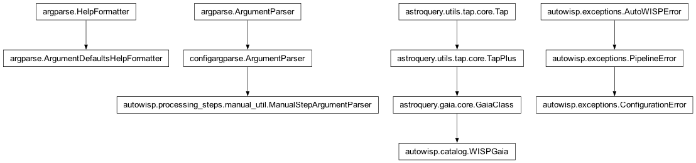
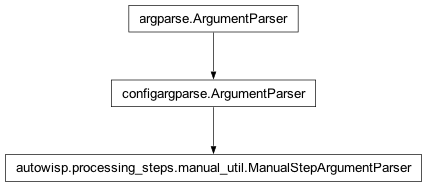

autowisp.processing_steps.manual_util module
Class Inheritance Diagram

Collection of functions used by many processing steps.
- class autowisp.processing_steps.manual_util.ManualStepArgumentParser(*, input_type, description, add_component_versions=(), add_catalog=False, add_photref=False, inputs_help_extra='', allow_parallel_processing=False, convert_to_dict=True, add_lc_fname_arg=False, add_exposure_timing=False, add_provenance_args=False, skip_io=False)[source]
Bases:
ArgumentParser
Incorporate boiler plate handling of command line arguments.
- __init__(*, input_type, description, add_component_versions=(), add_catalog=False, add_photref=False, inputs_help_extra='', allow_parallel_processing=False, convert_to_dict=True, add_lc_fname_arg=False, add_exposure_timing=False, add_provenance_args=False, skip_io=False)[source]
Initialize the praser with options common to all manual steps.
- Parameters:
input_type (str) – What kind of files does the step process. Possible values are
'raw','calibrated','dr', or'calibrated + dr'.description (str) – The description of the processing step to add to the help message.
add_component_versions (str iterable) – A list of DR file version numbers the step needs to know. For example
('srcextract',).add_catalog (False or dict) – Whether to add an arguments to specify a catalog query. If not False should specify defaults for some or all of the option values and a prefix for the option names.
inputs_help_extra (str) – Additional text to append to the help string for the input files. Usually describing what requirements they must satisfy.
allow_parallel_processing (bool) – Should an argument be added to specify the number of paralllel processes to use.
convert_to_dict (bool) – Whether to return the parsed configuration as a dictionary (True) or attributes of a namespace (False).
- Returns:
None
- _add_provenance_args()[source]
Add provenance flags mirroring
wisp-add-images-to-db.These let a manual step resolve a FITS header to the survey-database rows (
Camera,Telescope,Mount,Observatory,Observer,Target) viaautowisp.database.provenance_resolver.get_or_create_observing_session(), so that the/Provenancegroup can be written to the DR file without requiringwisp-add-images-to-dbto have been run.Flag names and defaults intentionally mirror
wisp-add-images-to-dbso a shared config file works for both.
- add_argument(*args, **kwargs)[source]
Store each argument’s description in self.argument_descriptions.
- error(message)[source]
Report a parse error, honouring
raise_config_parse_errors().argparse’s default reports a bad value by printing usage to stderr and calling
sys.exit(2). During pipeline config generation thatSystemExitwould escape the error-handling machinery (it is aBaseException, not caught bycapture_errors/run_pipeline.main) and silently end a detached run, so there we raise a recordableConfigurationErrorinstead. Interactive CLI parsing keeps argparse’s helpful usage-and-exit behaviour.- Parameters:
message (str) – The argparse-formatted error description.
- Returns:
None
- autowisp.processing_steps.manual_util.add_image_options(parser, include=('subpixmap', 'gain', 'magnitude-1adu'))[source]
Add options specifying the properties of the image.
- autowisp.processing_steps.manual_util.ignore_progress(input_fname, status=1, final=True, **kwargs)[source]
Dummy function to replace progress tracking of auto processing.
- autowisp.processing_steps.manual_util.parse_iers_max_age(value)[source]
Parse the
--iers-auto-max-agevalue into what astropy expects.- Parameters:
value – The command line value: a number of days, or one of
none/off/disable(case insensitive) to switch off the staleness check.- Returns:
- The maximum age in days, or
Noneto disable the check (and hence the automatic IERS download) entirely. A non-positive number is also treated as
None.
- The maximum age in days, or
- Return type:
float or None
- autowisp.processing_steps.manual_util.raise_config_parse_errors()[source]
Make
ManualStepArgumentParserraise on bad input, not exit.Use around programmatic parsing of stored configuration, where there is no interactive user to read an argparse usage message and the process may be a detached pipeline run. A parse failure then becomes a catchable, recordable
ConfigurationErrorinstead ofSystemExit. Nestable; restores the previous mode on exit.- Yields:
None